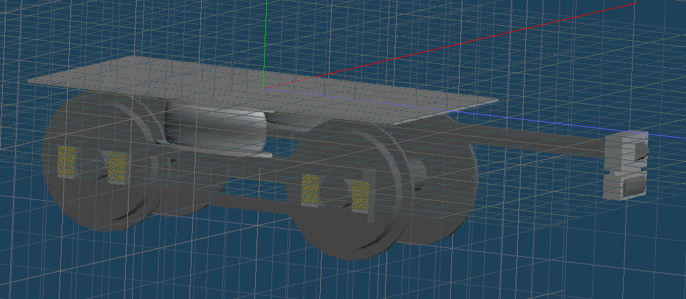
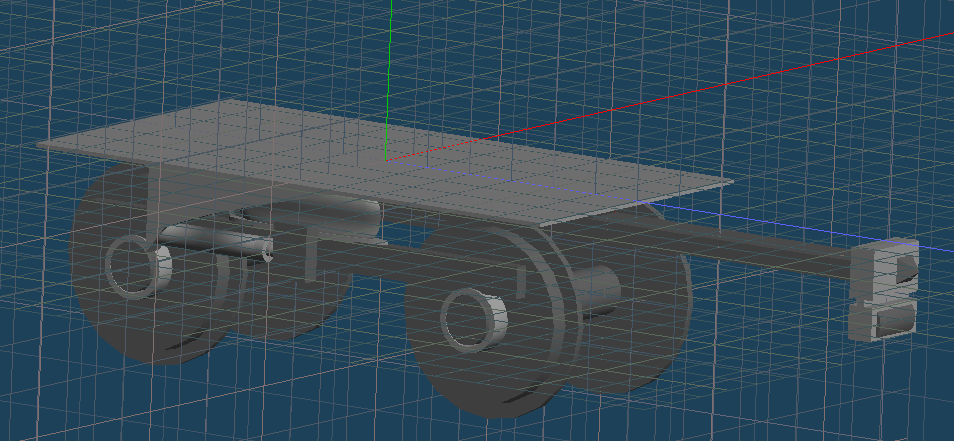

戻る
AT10/AT10-HS

亜空車輌初の台車である「AT10」とそのヨーダンパ付き版である「AT10-HS」です。
改造して利用する場合はTwitterかDiscord(@ZerosakaMakoto#4554)へお願いします。無改造での利用はクレジット表記を条件に許可します。
なお、現時点では電気連結器のみの装備です。今後のアップデートで自動連結器に換装したものを追加予定です。
ダウンロード（Dropbox）
ダウンロード（OneDrive）
Please share:)→
記事一覧に戻る